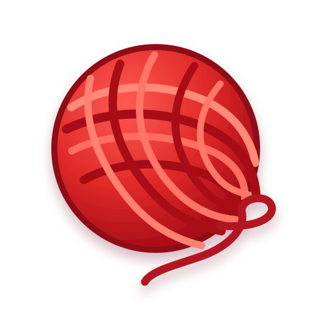
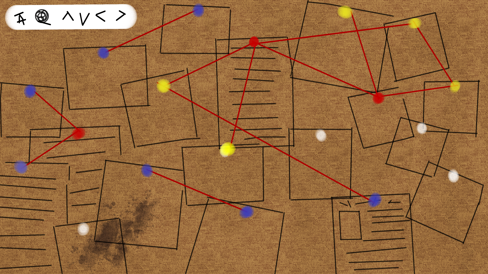

Overview
Purpose
To provide a simply designed, yet complex mystery game.
The user must navigate a police suspect board, placing pins and yarn to solve the case. Once enough evidence is discovered and false leads thrown out, then they win!
Audience
My wife, and others like her who like to solve mysteries, puzzles and escape rooms instead of doing homework.
Dynamic elements
The users will need to move around the pin board, be able to draw yarn across the screen which that will autosnap to the items, select notes/images on the board to make them larger/full screen (dialog box), and will need stats and progress tracked in variables. I also may, if time allows, add some asthetic animations and such that will require JS.
Branding
Website Logo

Style Guide
Color Palette
Palette URL: https://coolors.co/ca0000-a36c39-322c29-ebdfd1-4759aaThe site will not follow a strict color pallete. The background is an image the general color of board, there will be yarn, and then buttons will be "light" with black, or "dark" with white. An accent will be "pin". Why? Because the site is almost entirely images. Now, light and dark will also be borders to some images, so they are really the true color pallete, but the others will give an idea. Lots of image, you click and interact with them.
| Board | Yarn | Dark | light | pin |
|---|---|---|---|---|
| A36C39 | CA0000 | 322C29 | EBDFD1 | 4759AA |
Pseudocode for your project
Images when selected will open dialog box with there reference, alt, and arial. (listener on images, opens dialog, fills content) Canvas will be used to draw yarn, automatically starting near nearest pin (probably based off of image), and ending at next. They will toggle a button to draw vs interact regularly. (listener, area, and then a few things I haven't decided on best implementing.) Pins are svg's, for now. When color is changed, the svg source will change. (change source when button clicked) A few other aspects are waiting on testing, such as completion requirements and tracking, but they will use variables, and likely be based off of yarn/pin color.
Wireframes
MainSratchLanding page
None needed. Matches wire frame. Preview below.
